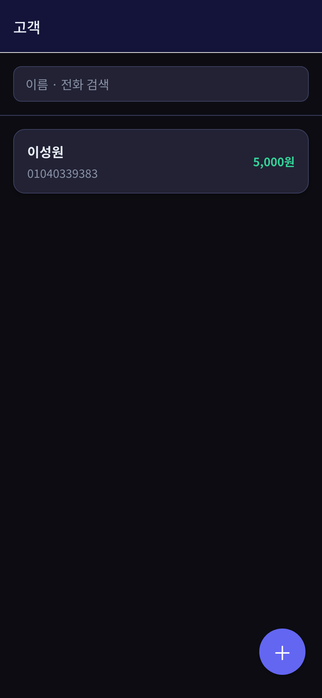
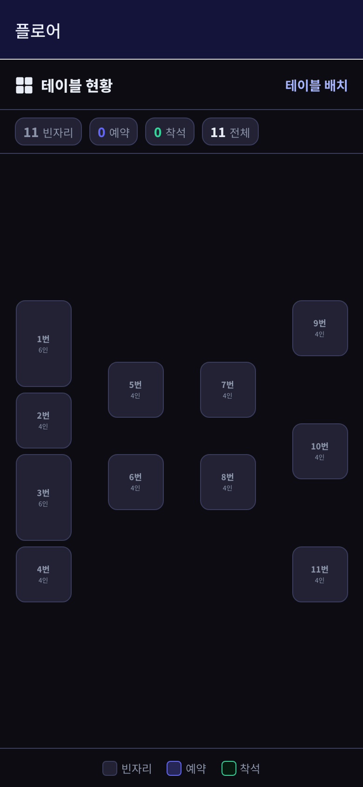

2026년 6월 14일 (일)
4일차 — 기능을 늘리고, 처음으로 '좀 예쁘게'
고객 관리에 설정에 테이블 배치도까지 채우고, 그동안 못생겼던 화면에 드디어 색을 입혔어요.
기능이 어느 정도 모양을 갖추니까, 주변에 필요한 것들을 채우게 되더라고요. 단골손님을 기록하는 화면(방문 이력, VIP·블랙리스트 표시, 선결제 잔액, 포인트), 가게 설정 화면, 그리고 우리 가게 테이블이 어디에 어떻게 놓였는지 보여주는 배치도를 만들었어요.
근데 이날 진짜 큰 변화는 디자인이었어요. 그전까지 화면은 솔직히 못생겼어요. 기능만 겨우 되는, 회색 박스 잔뜩인 상태요. 거기에 어두운 톤의 깔끔한 테마를 입혔는데, 분위기가 확 달라지니까 괜히 뿌듯하더라고요.
색을 칠하는 방식도 클로드가 알려준 대로 영리하게 했어요. 화면마다 색을 일일이 칠하는 게 아니라, '기본색·강조색·글자색'을 미리 한 군데 정해두고 다들 거기서 가져다 쓰게요. 이렇게 해두면 나중에 색 하나만 바꿔도 앱 전체가 한 번에 바뀌어요. 처음엔 왜 이렇게 번거롭게 하나 했는데, 며칠 뒤에 이게 얼마나 편한지 알았어요.
또 화면 크기에 따라 다르게 보이게도 했어요. 폰에서는 메뉴가 접히고, 태블릿에서는 쫙 펼쳐지는 식으로요. 식당에선 태블릿을 많이 쓰니까 이건 꼭 필요했어요. 중간에 화면이 빙글빙글 무한 로딩에 걸려서 한참 헤맸는데, 클로드랑 같이 원인을 하나씩 지워가며 잡았어요. 이런 날도 있는 거죠.


이날의 실제 작업 내역 (9건)
4e588fdFix infinite loading + add tablet tab bar4085962Responsive home: mobile menu vs tablet inline (v1 nav)f515403Rebuild floor: coordinate table layout, drag setup, status view (v1)25e78dcReskin all screens to v1 dark themeea624dcAdd dark theme tokens (from v1) and reskin home/reservation list4df79a0Update handoff: bucket A (customers/settings/floor) done, awaiting test853db2eAdd basic floor view (table occupancy for today)fa4b372Add store settings (name, confirmation time, tables)dfd88d5Add customer management (history, VIP/blacklist, prepaid, points)